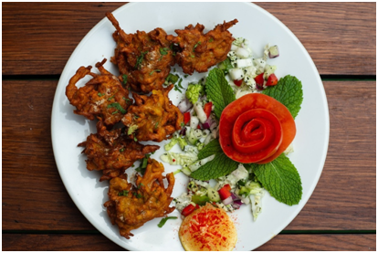

Graam Masala é restaurante típico indiano, e umas das principais características da nossa culinária é o uso sofisticado de produtos frescos, de ótima qualidade e variedades.
Localização e contato
Rua Frederic Chopin, Número:1961, Bairro Água Verde, Curitiba Paraná 86707-090
Telefone de contato: +554599983-4835
Um pouco das nossas comidas
